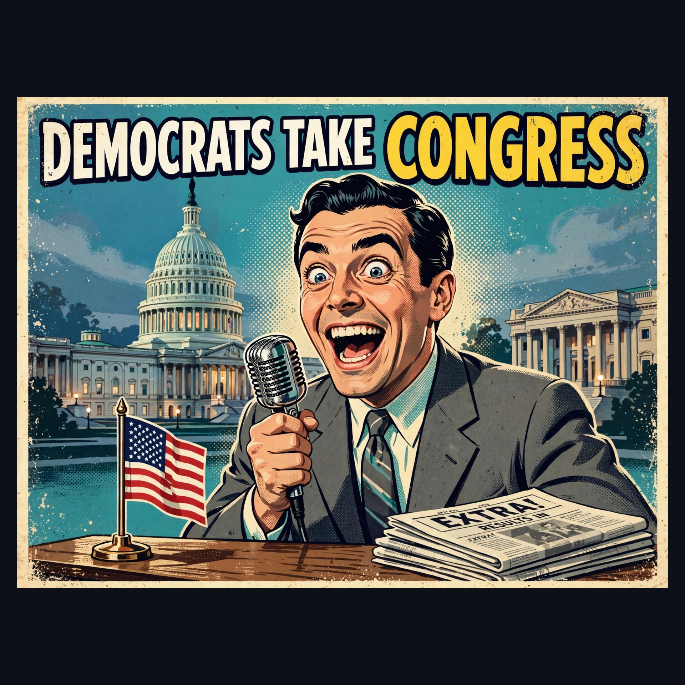
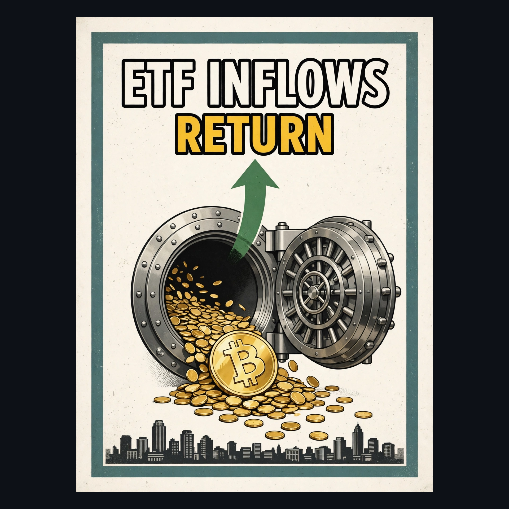
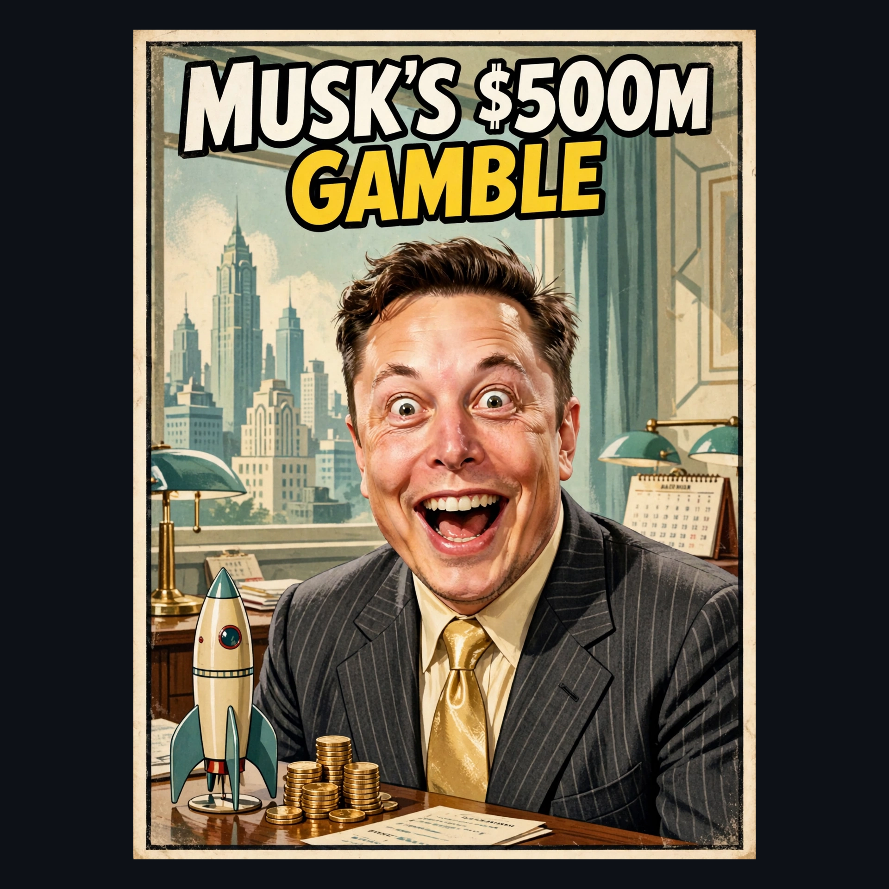

Bitcoin Stories — Thursday, Nov 5, 2026
Bitcoin rose 5.7% to about $80,484 in Asian morning trading, holding above $80,000 after dipping toward $75,700 on election night, while Zcash jumped 11.7% ahead of a network upgrade.
Read the full story →
Democrats won control of both the House and Senate in the 2026 midterms, a major political shift driven by voter concerns over the economy, rising living costs, inflation and the Iran war.
Read the full story →The Bank of England is widely expected to lift Bank Rate from 3.75% to 4% at noon GMT on Thursday, its first increase since August 2023, after UK inflation rose to 3.5% in September.
Read the full story →
US spot Bitcoin ETFs recorded $74.6 million in net inflows on November 4, reversing three straight sessions of withdrawals; Fidelity's FBTC drew $236.7 million while BlackRock's IBIT lost $201.2 million.
Read the full story →
Elon Musk joked on X that his 'election-interfering space lasers didn't work this time' after spending nearly half a billion dollars on Republican efforts, including $158M to the Senate Leadership Fund.
Read the full story →